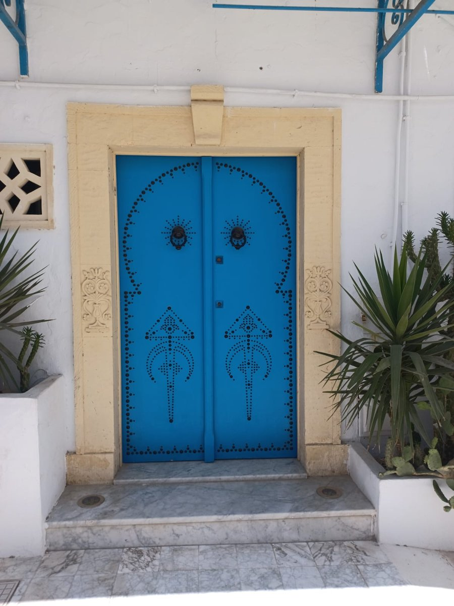
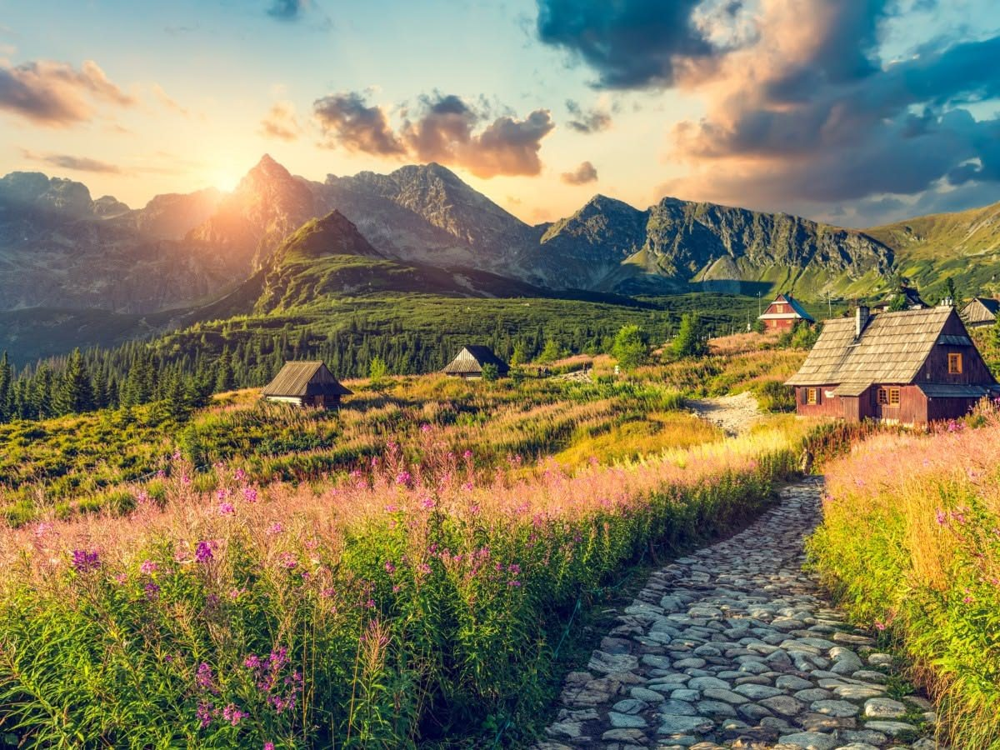

Carte postale · n° 1
36 ans
dans le tourisme, de 1990 à aujourd’hui.
- DeParis, 1990
- Àaujourd’hui
- Viatoute la chaîne du voyage
Du tourisme à la communication digitale, je cultive le même goût pour les projets qui créent du lien et de l’émotion.
dans le tourisme, de 1990 à aujourd’hui.
à la tête d’une agence de voyages.
le chiffre d’affaires de l’agence en sept ans.
au-dessus de mon objectif en 2025.
Des lagons aux déserts, de Santorin à Sidi Bou Saïd : chaque bulle ouvre sur un nouveau paysage.



« L’expertise terrain sans le digital, c’est un moteur sans carburant. »
J’ai exercé sur toute la chaîne touristique : production de séjours, voyages sur mesure pour individuels et groupes, gestion transport et yield management, supervision à destination comme représentante exclusive de VVF Vacances en Tunisie. Depuis 2013, je dirige une agence de voyages en Guadeloupe : j’ai d’abord redressé une agence en centre commercial, puis développé une agence en ville. Ce parcours m’a appris à lire un marché, à fidéliser une clientèle exigeante et à piloter une performance commerciale dans la durée. Le digital, c’est le levier pour amplifier ce que je sais déjà faire.